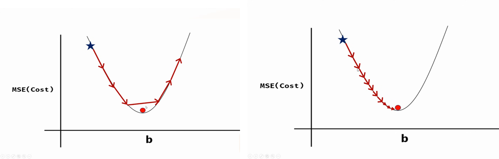

Back to module
Cost-function diagram
Gradient Cost Function
Task
The Unit 8 task asked me to change iteration count and learning rate in the gradient descent notebook and observe the effect on cost.
Notebook Setup
The notebook fits a simple line by updating m and b from
zero.
Changed Settings and Results
The test runs show the trade-off between convergence speed and stability.
| Run | Iterations | Learning rate | Final m | Final b | Final cost | Observation |
|---|---|---|---|---|---|---|
| Original notebook run | 100 | 0.08 | 2.040516 | 2.853600 | 0.004121 | Strong convergence near expected line. |
| Fewer iterations | 50 | 0.08 | 2.150586 | 2.420784 | 0.065281 | Stopped early with higher cost. |
| Lower learning rate | 100 | 0.01 | 2.448468 | 1.380887 | 0.480407 | Stable but slow convergence. |
| Higher learning rate | 30 | 0.2 | -3.80e17 | -1.05e17 | 1.32e35 | Diverged after overshooting minimum. |
What the Activity Demonstrated
Optimisation is sensitive to parameter choice, not just model form.
Evidence

Learning Outcomes
Supports LO2, and LO3 through comparison of convergence behaviour under different optimisation settings.